最小
最大
平均値
標準偏差
標準誤差
-65.0178
94.4699
4.85274
20.4635
0.255794
| オプション | 必須項目/選択項目 | 説明 | デフォルト |
|---|---|---|---|
| -i | 必須 | 入力ファイル設定 | NULL |
| -o | 選択 | 出力ファイル設定 | |
| -s | 選択 | 出力ファイルの拡張子を設定 | 123068969643184-256.splt |
| -H | 選択 | 分割する高さを設定（単位：ピクセル） | 0 |
| -W | 選択 | 分割する幅を設定（単位：ピクセル） | 0 |
| -S | 選択 | 分割する奥行きを設定（単位：ピクセル） | 0 |
| -HA | 選択 | 分割する高さを設定（単位：Å） | 0 |
| -WA | 選択 | 分割する幅を設定（単位：Å） | 0 |
| -SA | 選択 | 分割する奥行きを設定（単位：Å） | 0 |
| -h | 選択 | ヘルプを表示 |
|
最小 |
-65.0178 |
| 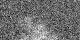 | 最小 |
-60.5052 |
| 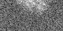 | 最小 |
-65.0178 |
| 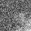 | 最小 |
-56.108 |
| 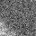 | 最小 |
-60.5052 |
| 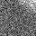 | 最小 |
-59.8818 |
| 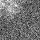 | 最小 |
-65.0178 |
| 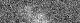 | 最小 |
-60.5052 |
| 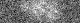 | 最小 |
-59.881 |
| 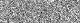 | 最小 |
-65.0178 |
| 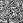 | 最小 |
-43.9472 |
| 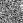 | 最小 |
-59.8818 |
| 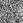 | 最小 |
-56.108 |
| 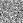 | 最小 |
-65.0178 |
| 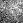 | 最小 |
-45.4312 |
| 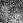 | 最小 |
-43.1625 |
| 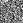 | 最小 |
-43.5284 |
| 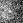 | 最小 |
-40.1097 |
| 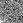 | 最小 |
-60.5052 |